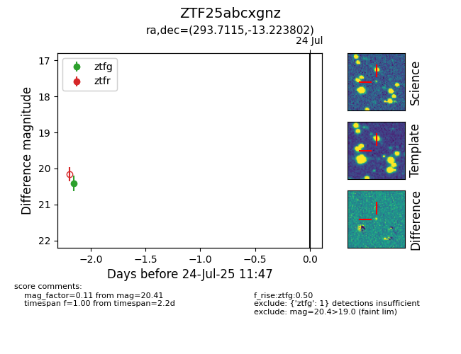

Target ZTF25abcxgnz at 2025-07-24 11:47, see:
FINK: fink-portal.org/ZTF25abcxgnz
Lasair: lasair-ztf.lsst.ac.uk/objects/ZTF25abcxgnz
ALeRCE: alerce.online/object/ZTF25abcxgnz
alt names
ZTF25abcxgnz (ztf,fink)
coordinates:
equatorial (ra, dec) = (293.7115,-13.22380)
galactic (l, b) = (25.7770,-15.51120)
photometry
last ztfg=20.41
1 ztfg detections
